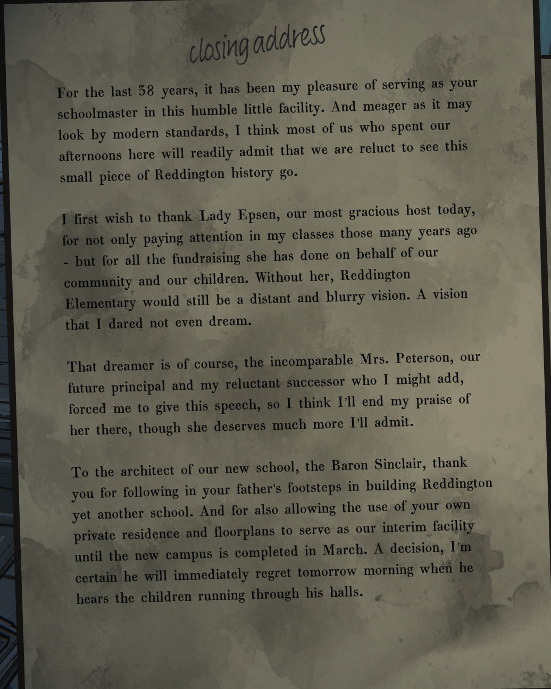
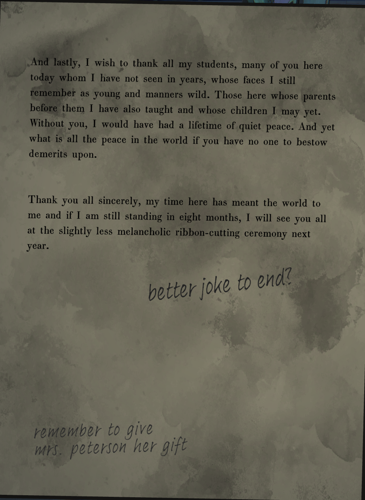
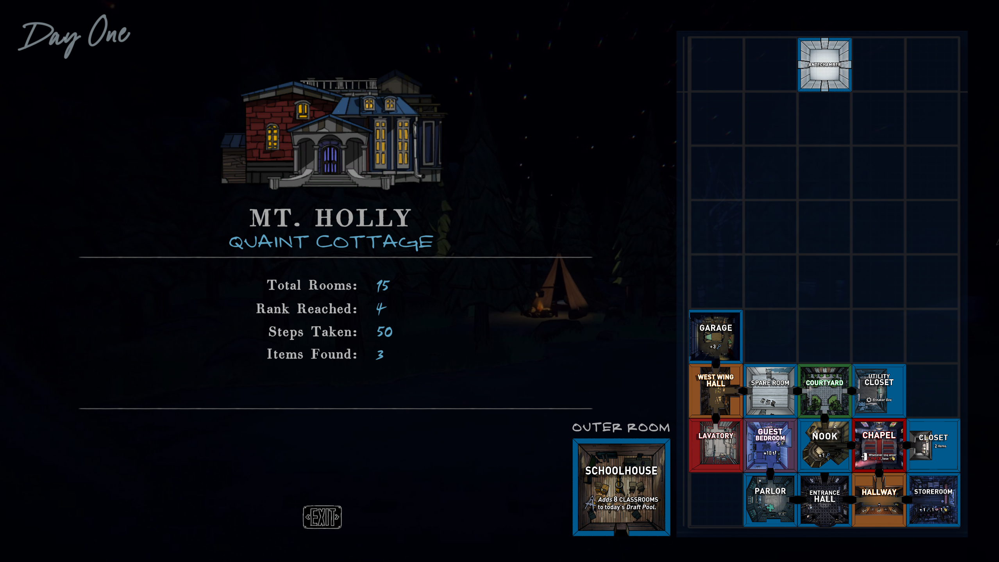

At first I was gonna write down a play-by-play of my every choice, action, and exploration as I navigated the estate, but I quickly realised that that idea is a little ridiculous.
Instead I'm going to focus my documentation to the database entries and save this journal for my more complex musings and reactions as they come up.
Chapel Secrets
The first such complex musing to note is that as I was exploring the chapel and recording its data I noticed a number of interesting things.
This has led me to the conclusion that lighting the candles will move the altar down and show us the eighth secret angel. I'm very eager to test this theory now.
After unlocking a few more rooms and documenting them last night, I got rather tired and so slept my computer and went to bed. Luckily the game seems to hold up fine being slept on.
Schoolhouse Blues
While exploring the schoolhouse after unlocking the West Path, something unexpected happened.
I cried.
You know, I must say, the amount of times this game just completely caught me off guard and made me cry while seeking its secrets is much higher than I expected it to be.
The stories of people told by its little notes, books, letters... Records of a time gone past. A storied history you are forced to engage with, think about, and care about as you explore the halls of this old building.
It's all very melancholic. This speech written by a ficitonal schoolteacher is a prime example of the type of thing that hits particularly hard for me.


This game really does do a spectaular job making the pages you find scattered throughout feel like they were written by and about real people with rich lives.
Anyways, finding that speech was more or less the last thing on the docket for this run.

Certainly not the most impressive run, but I was prioritizing knocking out those permanent upgrades.